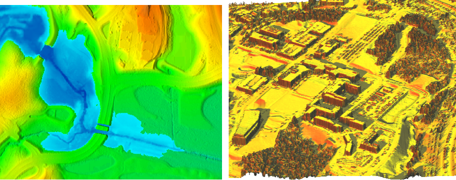
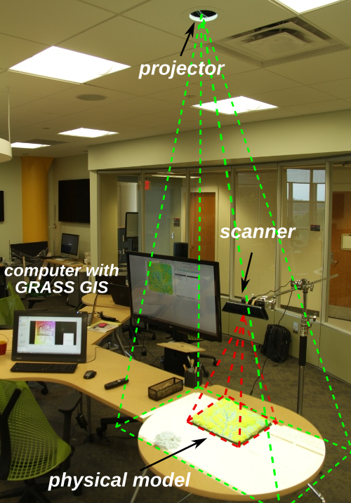
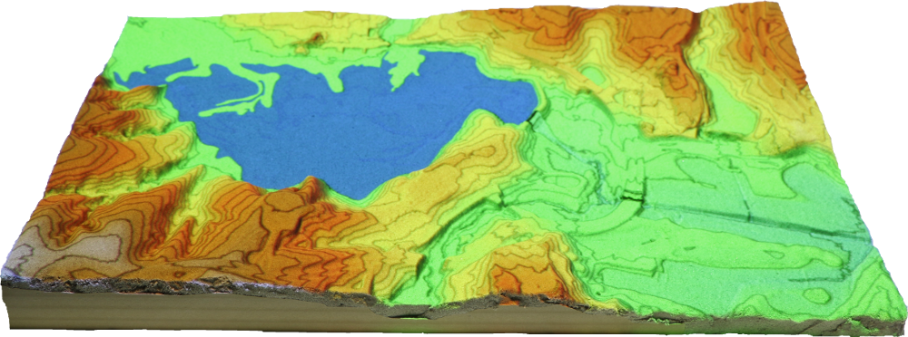
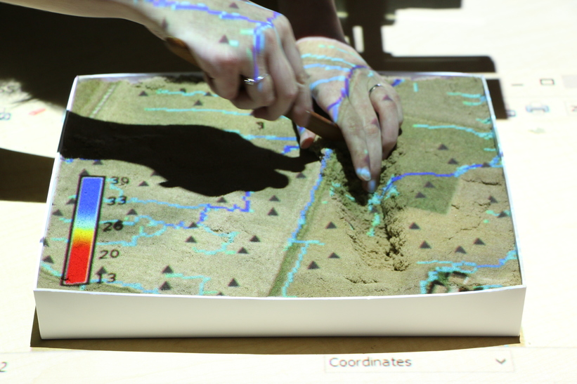

April 2015
Anna Petrasova
Geospatial modeling with
tangible interaction
Topography as a driving force
Topography controls water flow, sediment transport, inundation,
landslides, and determines solar irradiation

Terrain modification

GUI vs. TUI
Tangible Landscape

=
physical terrain model
+
scanner (Kinect)
+
projector
+
computer
+
GRASS GIS

Lake Raleigh dam break

Lake Raleigh dam break

Source: NCSU Libraries
Simulation using module r.damflood implemented in GRASS GIS
solving shallow water equations.
Cannata, M., & Marzocchi, R. (2012).
Two-dimensional dam break flooding simulation:
A GIS-embedded approach. Natural Hazards, 61(3),
1143–1159.


Tangible exploration of subsurface data



Soil moisture data provided by Dr. Jeffrey White
Applications
- intuitive 3D sketching for design and planning
- collaborative, interdisciplinary and creative environment for decision making
- GIS education, explaining spatial concepts
- testing of algorithms for modeling land surface processes